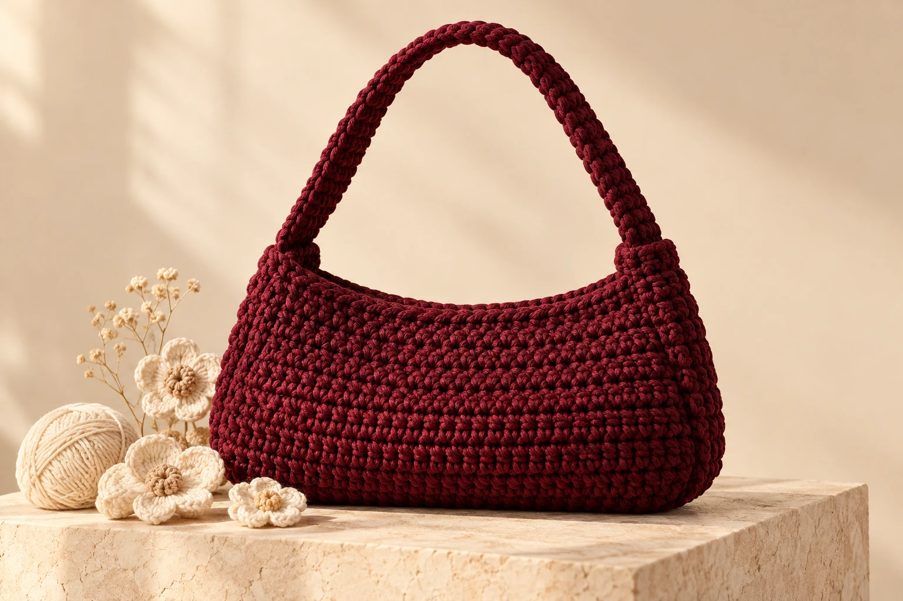
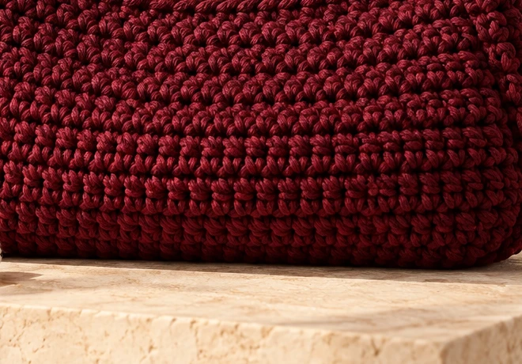

THE FIRST COLLECTION
Made slowly.
Loved forever.
Handmade crochet pieces. A touch of cozy, from Pri to you.
Explore the collectionSMALL THINGS. BEAUTIFULLY CONSIDERED.
Soft textures. Thoughtful details.
Pieces to carry, gift and cherish.
Deep cherry · Soft cotton yarn
Warm ivory · A flower to keep
Browse the full collection or save a favourite to your wishlist.
First collection preview · Sample pieces and indicative prices

BEAUTY IN THE DETAILSThere’s something about handmade. The texture beneath your fingers. The tiny details you notice later. The feeling that someone took their time.
That’s the heart of Pri’s Cozy Crochet. Thoughtful crochet pieces that bring a little warmth to your everyday.
A little care goes a long waySpot clean with cool water and mild soap. Avoid scrubbing the stitches.
Lay flat to dry in the shade. Let your piece dry fully before storing.
Store flat in a dry place. Avoid overfilling your bag to keep its shape.
A birthday, a thank-you, a little pick-me-up. Find something with a softer, more personal touch.
This is our first storefront preview. Product images and prices are illustrative; ordering and checkout will be enabled for launch.
Custom colours and pieces are part of our launch plans. Available options and a request form will appear once the studio is ready to take orders.
Shipping areas, delivery estimates and the returns policy will be published before checkout opens. No orders or payments are being accepted in this preview.
Spot clean gently with cool water and mild soap, then dry flat in the shade. Avoid stretching, tumble drying or overfilling your bag.
Read the care guide